Tradicions
A Catalunya, les tradicions nadalenques són un reflex de la rica cultura popular del país. Entre aquestes trobem els pastorets, els pessebres vivents i el tió, una combinació de màgia, religiositat i celebració en família que fan de les festes de Nadal un moment especial i únic

Pessebres vivents
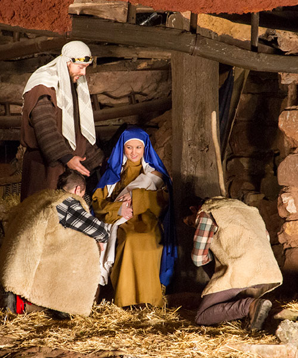
El Pessebre Vivent de Corbera de Llobregat, considerat el primer de Catalunya, es representa des dels anys seixanta a la Penya del Corb. Amb més de 200 actors i un recorregut de 700 metres, ofereix escenes nadalenques integrades en el paisatge rocós, creant una experiència única.
(Foto: Albert Miró-Diputació Barcelona)
(Foto: Albert Miró-Diputació Barcelona)
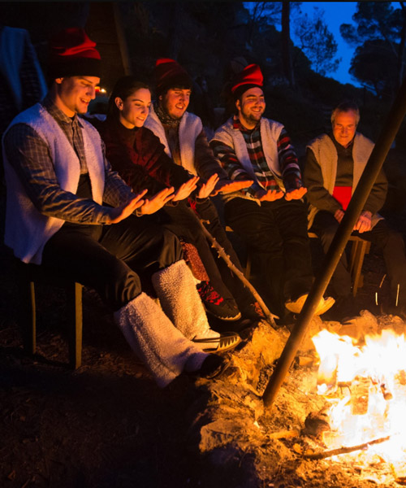
El Pessebre Vivent de Sant Fost, conegut pels seus efectes especials, combina escenes del Naixement de Jesús amb la representació d’antics oficis catalans, com el boter i el ferrer, a més de llenyataires i carboneres, pastors i caçadors, el que permet viure una experiència tradicional i única.
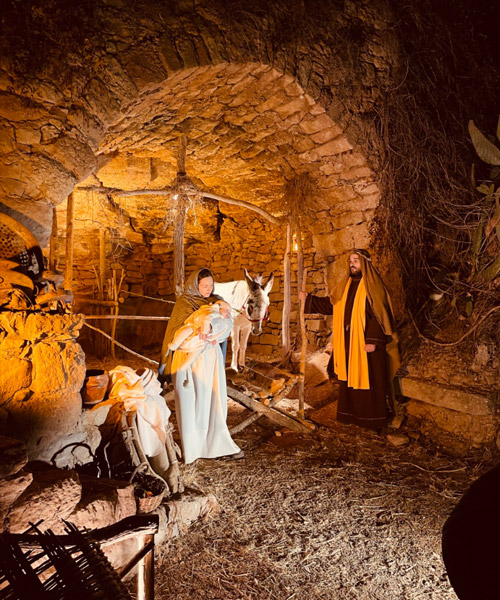
El Pessebre Vivent del Bages, celebrat des de 1977 a les Torres de Fals, compta amb 260 participants que recreen escenes tradicionals amb música i il·luminació, i ofereix un espectacle de gran prestigi i difusió arreu de Catalunya.
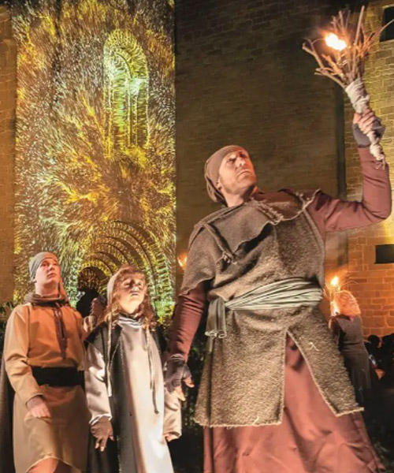
Únic dins d’un monestir medieval a Catalunya, ofereix un viatge al passat amb escenes recreades per 100 actors, vestuari històric i grans efectes visuals. A més de les tradicionals escenes nadalenques, els visitants poden descobrir oficis medievals i participar en danses en un taller al Jardí de l’Absis.
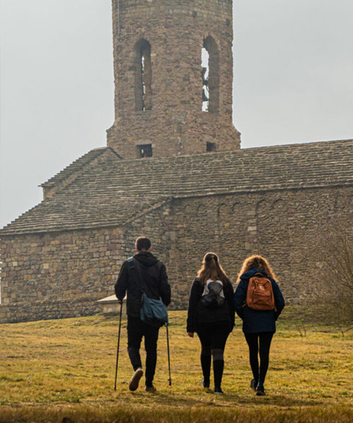
El Pessebre de Tona, que es representa des de 1972 al parc de les Feixetes, a la falda del castell, és una obra en moviment parlat amb vestuari d'època, música en directe i enregistrada. Una tradició que captivava les famílies any rere any.
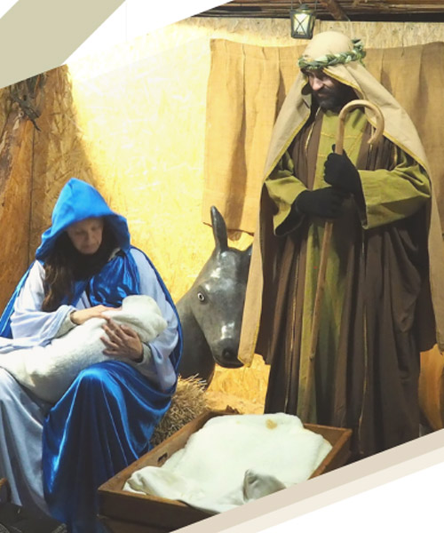
El IX Pessebre Vivent de Cànoves i Samalús, que tindrà lloc els dies 6 i 7 de desembre de 18 a 20 h, ofereix escenes bíbliques i tradicionals en un entorn natural. A més, el dia 8 se celebrarà el III Pessebre Vivent Infantil, amb nens de 4 a 14 anys com a protagonistes, de 12 a 13 h.
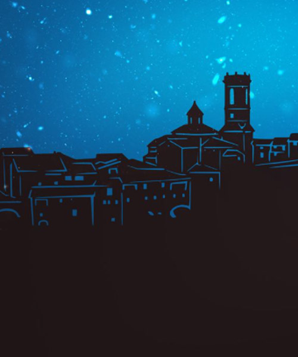
Es representa des de 1987 i és una tradició que transforma el casc antic del poble en un escenari nadalenc. Els participants, vestits amb indumentària d’època, recreen escenes tradicionals del pessebre. Els carrers empedrats i les vistes espectaculars de Rupit serveixen de fons natural per a aquesta representació.
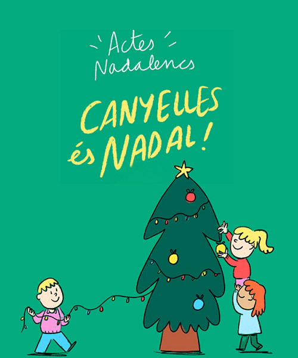
Representat des del 2007, és un pessebre en moviment amb més de 200 figurants, vestuari d’època i música en directe. Ambientat a la Jerusalem del naixement de Jesús, es compon de diverses escenes teatrals. El recorregut comença a la placeta de la Bassa d’en Llot i segueix pel nucli antic.
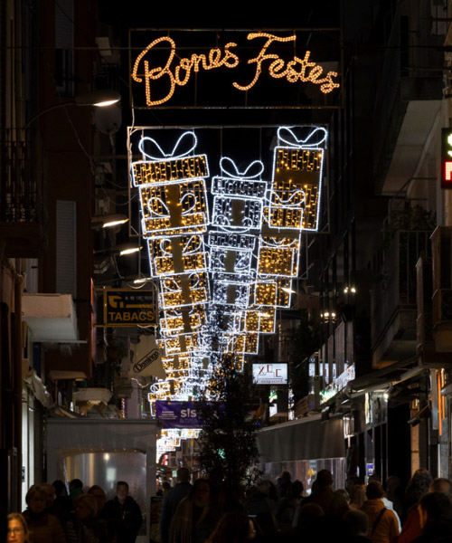
Calella ofereix diverses exposicions de pessebres: el de la ciutat al portal de l'església parroquial (13/12-2/2); l’exposició de pessebres i diorames al casal de l'Amistat (21/12-5/1, tancat Nadal i Cap d'Any), l'alternatiu al centre parroquial (13/12-2/2) i el pessebre Playmobil a l'Ajuntament Nou (13/12-6/1).
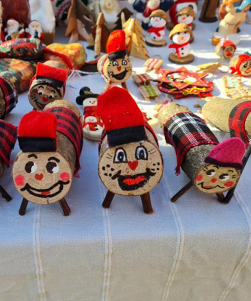
El nucli històric de Cabrianes es converteix en un pessebre vivent durant un dia, amb la participació d'actors locals molt implicats. L'activitat inclou un petit tast de productes locals, com caldo, mató, coca, embotits, ratafia i pa amb botifarra, creant una experiència nadalenca completa.
Pastorets
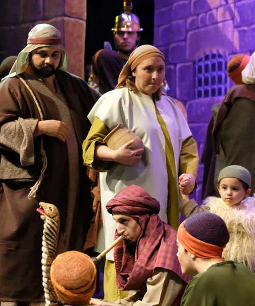
Els Pastorets de Mataró, referent a les comarques de Barcelona, combinen tradició i modernitat amb música en directe, balls, canvis d’escenografia i efectes especials. Un espectacle que conserva l'esperit de principi del segle XX, però amb la força i el ritme que reclama el públic del segle XXI.
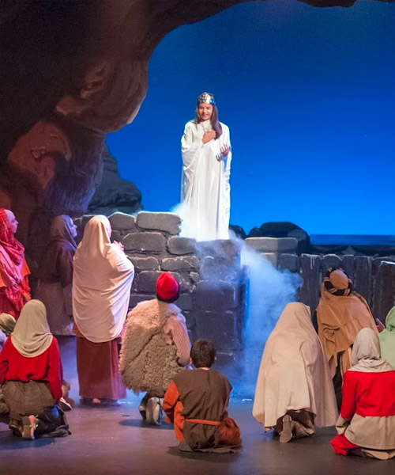
Els Pastorets de Calaf, una tradició que data de 1925, són un espectacle màgic i entranyable de gairebé tres hores que atrau a petits i grans. Amb més de 100 actors i 50 decorats, la representació ofereix una posta en escena espectacular, plena d’efectes especials que sorprenen els espectadors.
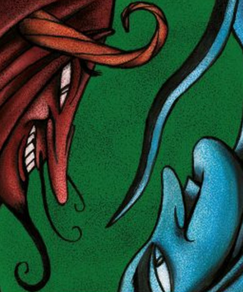
Escrits per Serafí Pitarra i representats des del 1900, els Pastorets de Berga ofereixen una versió casolana i humil d’aquesta tradició. Amb un rerefons bíblic, el poble berguedà es converteix en el protagonista, fent d’aquest espectacle una experiència propera i identificativa per a tots.
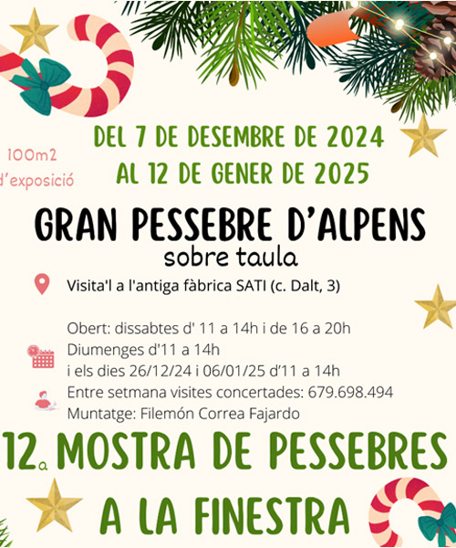
Des d'escenes tradicionals Fins a creacions originals, cada finestra d’Alpens explica una història nadalenca diferent. A més de la Mostra de Pessebres a la Finestra, no et perdis el gran pessebre, un muntatge de més de 100 m².
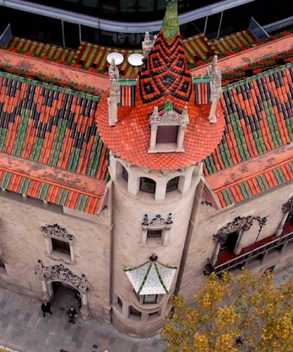
La seu central de la Diputació de Barcelona, a l’edifici de Can Serra, acull la mostra Un pessebre napolità del segle XXI, una obra única de l’artista, figurinista i escenògraf Josep Massagué. La peça, cedida pel Museu Tèxtil de Terrassa, combina tradició i contemporaneïtat.
Tions
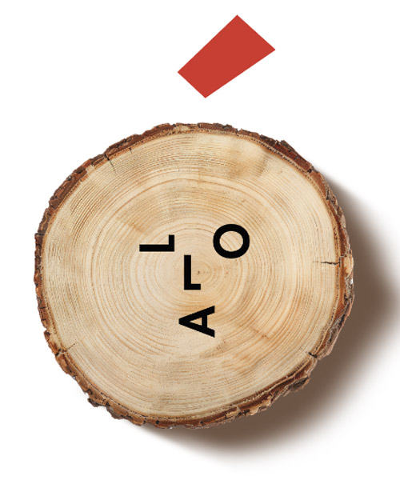
Implica tota la població, amb veïns i comerciants decorant els carrers amb tions originals. Els visitants poden participar en un joc de pistes per descobrir els tions exposats. A més, s'hi celebra un mercat de Nadal amb productes locals, dinamitzant el comerç de la vila. Una oportunitat per gaudir del poble amb família i amics.
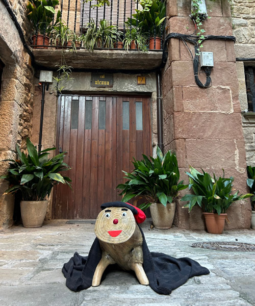
"Caçadors de Tions" a Súria et convida a crear el teu propi tió mentre recorres els carrers històrics del Poble Vell. Aquesta activitat familiar et permet trobar les peces per construir-lo i endur-te'l a casa, vivint una experiència màgica i divertida aquest Nadal.
Crea el teu tió
SúriaFins al 21/12/2024
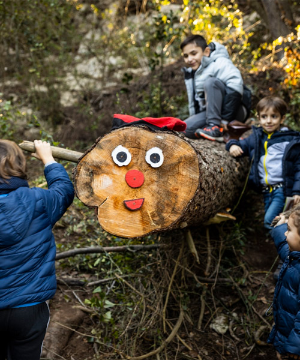
Santa Margarida i els Monjos ofereixen una activitat màgica per descobrir els tions amagats pels boscos, vinyes i carrers. Escull una ruta, segueix el mapa i busca els tions en llocs sorprenents com arbres, balcons o matolls. Un Nadal ple de natura i diversió!
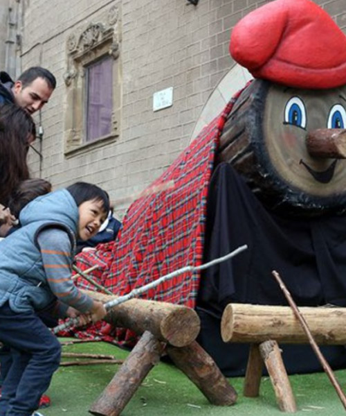
Fer cagar el tió és una tradició catalana vinculada a la fertilitat, que se sol celebrar la nit de Nadal o el 25 de desembre. A la Fira de Santa Llúcia, al centre de Barcelona, un any més els nens i les nenes menors de 12 anys podran fer cagar un tió gegant.
Altres

La Festa de la Fia-Faia, declarada patrimoni de la humanitat per la UNESCO, il·lumina cada Nit de Nadal els pobles de Bagà i Sant Julià de Cerdanyola. Amb el cant "Fia-Faia nostro senyor ha nascut a la paia", els veïns encenen les faies, torxes baixades de la muntanya, per celebrar el naixement de Jesús.
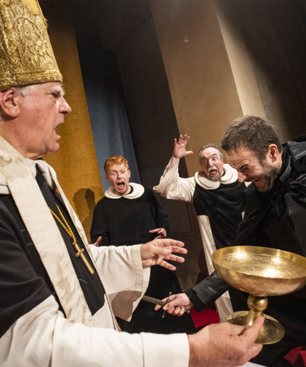
Pedra i Sang reviu al monestir de Sant Cugat l’assassinat de l’abat Biure la Nit de Nadal de 1350, enfrontat amb el noble Saltells. Aquesta tragicomèdia combina moments d’humor amb escenes plenes de tensió i música en directe.
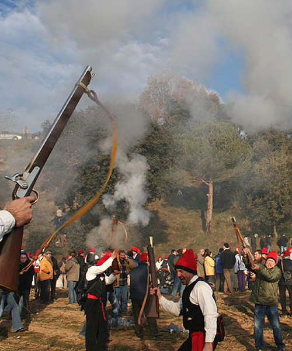
Es tracta d’una tradició centenària on els veïns busquen, tallen i decoren el pi més bonic per oferir-lo a Santa Coloma. L'arbre, transportat amb carros de bous i acompanyat de trabucs, s'hi fixa a l'església, guarnit amb pomes i neules, en una celebració plena de màgia i sorprenent per a tots.
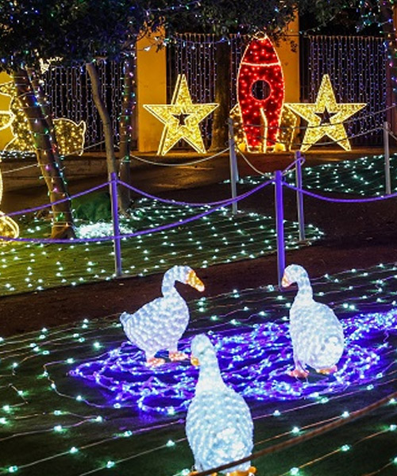
El Bosc Encantat, il·luminat el 26 de novembre, és un indret màgic a la part alta del parc de la Torre Lluc. Amb 100.000 punts de llum, aquest bosc serà l’accés al Campament Reial, que es podrà visitar durant les festes de 17 a 23 hores, i a partir del 2 de gener al Museu.